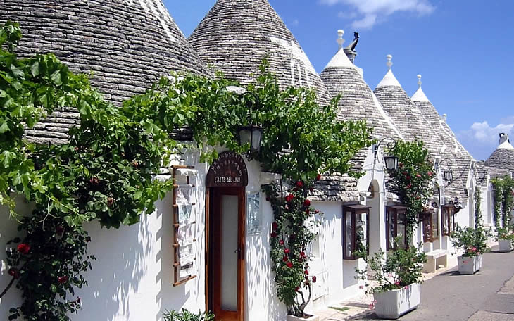
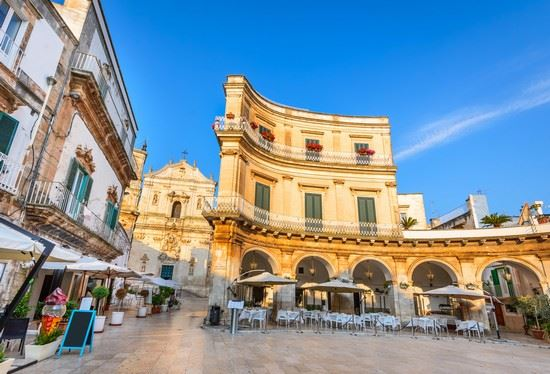
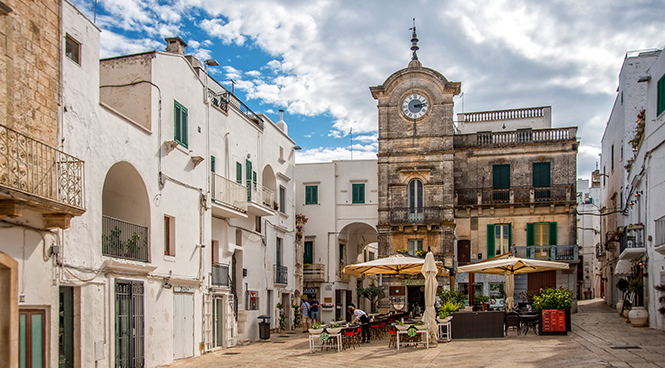
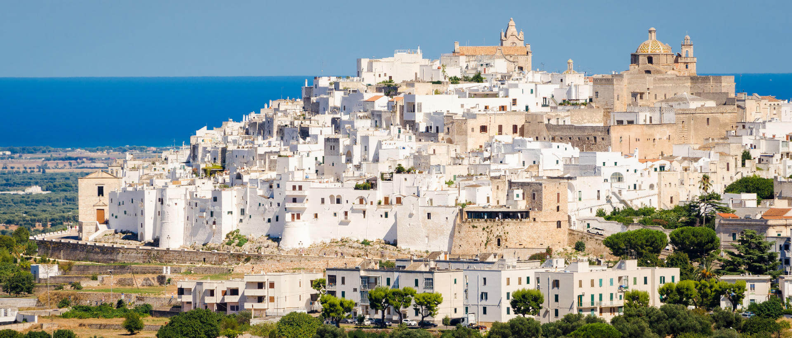

Cosa visitare durate il pernottamento?
Marina di Pulsano
L'area della Marina di Pulsano è caratterizzata da un alternarsi di scogliere e cale sabbiose, le principali sono Luogovivo, La Fontana, Le Canne, Montedarena, Ospedale Capparone (o Villa Verde), Pezzarossa, Serrone, Lido Silvana (nel cui golfo è presente un isolotto scoglioso, raggiungibile anche a nuoto, e sulla cui spiaggia sono presenti ancora, seppur in minor numero rispetto al passato, esemplari di ginepro coccolone che pongono le loro radici tra la sabbia), Terrarossa e Lido Checca (ricadente in parte nella suddetta exclave del Comune di Taranto). La zona di Marina di Pulsano e l'entroterra godono di particolare fama tra i turisti che visitano il Salento in virtù della ricchezza naturalistica, storica ed enogastronomica che è possibile provare da queste parti. I suoi fondali sono mediamente bassi e indicati ad un turismo di tipo familiare, è il luogo ideale dove praticare snorkeling e attività subacquee. Le spiagge sono attrezzate da punto di vista balneare e turistico.
Taranto
È chiamata “la città dei due mari”, Taranto, bagnata dal Mar Grande e dal Mar Piccolo, con una posizione strategica che l’ha resa protagonista di importanti vicende storiche. Le antiche testimonianze più preziose sono custodite presso il Museo archeologico nazionale, il MarTa, dove è possibile ammirare i famosi “Ori di Taranto”, raffinate produzioni dell’arte orafa locale tra il IV e il II secolo a.C., oltre all’immensa raccolta di reperti archeologici provenienti da tutta la provincia ionica. La storia di Taranto corre lungo i due ponti che collegano la città vecchia a quella moderna. Oltre al ponte di pietra costruito dopo l’alluvione del 1883, il ponte girevole inaugurato nel 1887 continua ad avere il fascino delle grandi opere di ingegneria meccanica e conduce nel dedalo di vicoli intorno alla centrale via Cava, lungo la quale fioriscono diverse botteghe artigiane. In questo istmo di terra si ergono architetture nobili e chiese di epoche e stili differenti come la Cattedrale di San Cataldo a cavallo tra il romanico e il barocco, o quella di San Domenico dai lineamenti gotici.
Valle d'Itria
-

Alberobello
-

Martina Franca
-
 Ceglie Messapica
Ceglie Messapica -

Cisternino
-

Ostuni
Trulli circondati da vigneti e uliveti a perdita d’occhio, è questo il volto più autentico della Valle d’Itria. Il paesaggio riempie lo sguardo di una magia senza tempo, nel cuore di borghi affascinanti come Alberobello, Martina Franca, Ceglie Messapica e Cisternino. Ostuni appare come un miraggio, splendida sulla collina nell’altopiano ricoperto di ulivi, dove il verde si tuffa nel blu del Mare Ardriatico. Basta una passeggiata tra i vicoli per ammirare le belle corti e le piazze incorniciate da casette bianche, botteghe artigiane e i ristoranti dove si cucinano prelibati arrosti di carne e saporite verdure di stagione. Qui si vive sereni, immersi in profumi e sapori d’altri tempi.